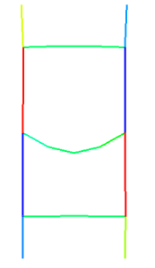
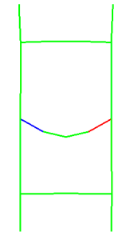
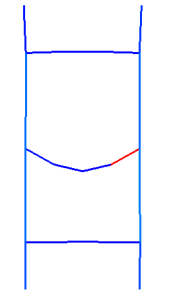

Calculate stress from forces and geometry
The Smooth Plot dialog box is still open from the previous step.
To view complete stress results, you can calculate beam stresses from element forces and beam geometry.
-

Calculate Beam Results from Forces and Beam Geometry
-
Apply
Top (Top Border bar→Orient View Drop-down list)
-

You now have a complete set of stress components.
-
Beam stresses are returned at predefined locations called recovery points. You can examine the results at other recovery points as follows.
-
Beam
Recovery Point D

Apply

Notice that the peak stress is much higher at recovery point D than at recovery point C.
On your own, view stresses at recovery points E and F.
-
Beam
Maximum
Apply

Maximum returns the highest calculated positive stress value for the beam element at all locations on the cross section, not just at recovery points.
-
OK
Smooth Plot dialog box